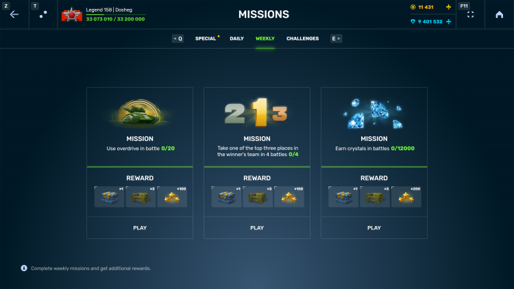
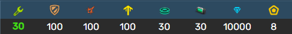
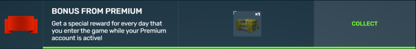
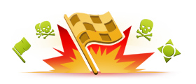
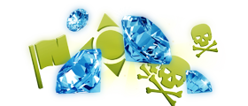
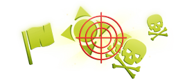
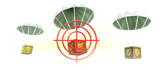
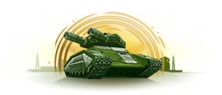

概括
任务功能可让您通过完成每日/每周任务获得游戏内奖励。每天第一次进入游戏时，您会在任务选项卡上看到一个小圆点，
表示您已收到新任务，您应该执行这些任务以获得游戏内奖励
您每天最多只能完成 3 个每日任务。
当天未完成的任务，在第二天不会被改变。
只有在您点击“领取奖励”按钮后，任务才会被视为已完成。
您可以在大厅的“任务”选项卡上查看您的进度。
目前无法在战斗中检查您的任务进度。
改变每日任务
您当前的任务可以换成新的任务。您可以每天一次免费交换一个任务
之后可以多次使用水晶交换。任务总是被不同类型的任务取代。
交换任务的价格相当于完成当前等级最长每日任务可获得的水晶奖励的三分之一
从新兵的 50 水晶到传奇的 999 水晶。
每周任务
当周第一次进入游戏时，除了每日任务外，玩家还将获得 3 个每周任务。它们类似于难度增加的每日任务，但通常可以在一两天内完成。
每周任务无法更改。

每周任务礼盒

这是特殊礼盒，只能作为完成每周任务的奖励获得，偶尔也可以作为活动和竞赛的奖励。
每周任务礼盒包含道具、水晶、电池和坦克币。
打开每周任务礼盒后，玩家将获得所有奖品，所有奖品均相同。

主要任务
这些任务将出现在您的每日、每周和挑战任务旁边，标题为“主要”。这些任务包括：
升级任务；
获得VIP任务（如果VIP激活，此任务将是领取每日礼物）
链接电子邮件任务（只能完成一次）
游戏内活动和庆祝活动的特殊任务。
道歉信物（在长期意外维护后有时会提供）
已完成的任务（通常出现在特殊的庆祝活动中，例如Tanki的生日和每日坦克币通行证）

任务类型
在任意模式下获得战斗分数
在特定模式下获得战斗分数
在任意模式下完成战斗

在特定模式下完成战斗
在任意模式下获得水晶

在特定模式下获得水晶
在获胜的队伍中分数排在前三名

摧毁敌人、剑圣/控制点/夺取、交付旗帜/进球

收集指定的道具箱子

使用过速装置